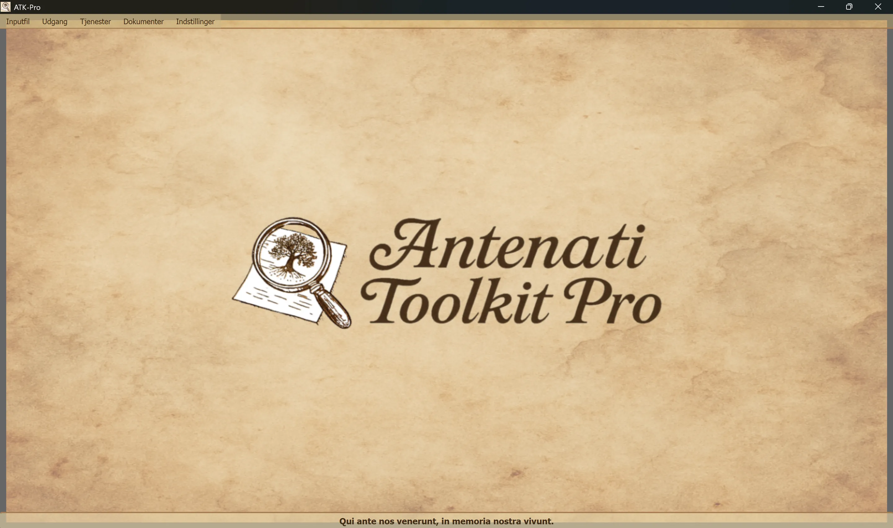

────────────────────────────────────────────────────────────────────────────────
🪟 Windows
ATK-Pro-Setup-vx.x.x.exe fra den officielle Release-side🐧 Linux
ATK-Pro-vx.x.x.deb (Debian/Ubuntu) eller .tar.gz fra Release-sidensudo dpkg -i ATK-Pro-vx.x.x.deb eller dobbeltklik i Nautilus/Files./ATK-Pro fra den udpakkede mappe🍎 macOS
ATK-Pro-vx.x.x.dmg fra Release-siden🪟 Windows
C:\Program Files\ATK-Pro\C:\Users\[TuoNome]\Documents\ATK-Pro\output\C:\Users\[TuoNome]\Documents\ATK-Pro\input\🐧 Linux
/opt/ATK-Pro/ (deb) eller udpakket mappe (.tar.gz)~/Documents/ATK-Pro/output/~/Documents/ATK-Pro/input/🍎 macOS
/Applications/ATK-Pro.app~/Documents/ATK-Pro/output/~/Documents/ATK-Pro/input/────────────────────────────────────────────────────────────────────────────────
De tilgængelige sprog er:
Med disse sprog anslås det på baggrund af de data, der var tilgængelige ved udgangen af 2025, at kunne dække omkring 98 % af efterkommere af italienere samt italienske eller italiensktalende samfund verden over.
Ved første kørsel opretter programmet automatisk følgende mapper:
C:\Users\[TuoNome]\Documents\ATK-Pro\output\C:\Users\[TuoNome]\Documents\ATK-Pro\output\doc\ (standard dokumentmappe)C:\Users\[TuoNome]\Documents\ATK-Pro\output\reg\ (standard registermappe)~/Documents/ATK-Pro/output/input\ tilsvarende (valgfri, til inputfiler)Under behandlingen oprettes midlertidige mapper til de downloadede tiles (tiles_canvas_X/) og, hvis PDF er valgt, midlertidige filer til genereringen heraf.
Alle midlertidige mapper og filer slettes automatisk, når behandlingen er afsluttet.
Kun de færdigbehandlede filer bevares (billeder i de valgte formater, PDF, manifest og metadata).
Brug Menu → Indstillinger → "Vælg outputmapper" for at ændre outputmapperne. Valgene gemmes og gendannes automatisk i næste session.
Kommandoen Indstillinger → Ressourceprofil styrer paralleliseringen, der anvendes under download, billedrekonstruktion og PDF-generering:
Profilen ændrer ikke kvaliteten, rettighederne eller antallet af hentede dokumenter. Portalens eventuelle specifikke forsigtighedsgrænser har fortsat forrang.
────────────────────────────────────────────────────────────────────────────────
Hovedvinduet i Antenati Toolkit Pro har en enkel og intuitiv opbygning.

Nederst vises det latinske motto “Qui ante nos venerunt, in memoria nostra vivunt” som en påmindelse om betydningen af rødder og kollektiv erindring.
Øverst i vinduet, under titellinjen:
[Inputfil] [Output] [Tjenester] [Dokumenter] [Indstillinger]
Hver menu indeholder specifikke knapper og indstillinger (se næste afsnit).
Håndterer indlæsning af IIIF-poster:
├─ Eksempel på input
│ └─ Vis eksempelfilen (viser formatet med par: D/R-tilstand + URL)
├─ Åbn input
│ └─ Vælg en .txt-fil med dine IIIF-poster
│ (Skal indeholde par: D/R-tilstand på linje 1, URL på linje 2)
└─ Rediger input
└─ Rediger den aktuelt indlæste inputfil
(Tilføj/fjern poster, skift URL, gem ændringer)
Håndterer behandling og output:
├─ Behandl │ └─ Starter download, rekonstruktion og lagring af billeder │ (Viser et statusvindue i realtid) ├─ Åbn outputmappe │ └─ Åbner mappen med de behandlede filer i Stifinder └─ Vis tidligere behandlinger └─ Liste over allerede behandlede poster
Liste over integrerede tjenester:
├─ AI-assisteret søgning │ └─ Foreslår portaler, forskningsspor og genealogiske søgeforespørgsler, der skal verificeres ├─ Billedvisning │ └─ Fremviser downloadede billeder og/eller genererede PDF-filer ├─ Visning af JSON-metadata │ └─ Original JSON og metadata (genealogiske, tekniske, EXIF) ├─ Avanceret OCR │ └─ Håndskrevne tekster fra 1800-tallet, kirkelatin, senmiddelalderlige tekster ├─ OCR-oversættelse │ └─ Automatisk oversættelse af udtrukne tekster til de valgte sprog └─ GEDCOM-eksport └─ GEDCOM, Gramps, Family Tree Maker, Ancestry, MyHeritage, WikiTree, etc.
Adgang til ressourcer og dokumentation:
├─ Ansvarsfraskrivelse - Juridiske bestemmelser og brugsbetingelser ├─ Præsentation af forfatteren - Baggrund om projektets forfatter ├─ Præsentation af projektet - ATK-Pro's historie, motivation og roadmap ├─ Vejledning - Hovedindeks for den modulopbyggede vejledning └─ Information - Version, copyright, kontakt-e-mail
Generel konfiguration af programmet:
├─ Skift sprog
│ └─ Vælg brugerfladens sprog (kræver genstart)
├─ Vælg billedformater
│ └─ Vælg mellem PNG, JPG, TIFF og PDF (mindst 1 er påkrævet)
│ PDF kan vælges alene eller sammen med billedformaterne
│ Valget gemmes og forudvælges automatisk i næste session
├─ Vælg outputmapper
│ └─ Åbner først valget af mappetilstand og derefter vinduerne til mappevalg:
│ • Én mappe til alt → én enkelt mappe til dokumenter og registre
│ • Separate mapper dok./reg. → én mappe til alle dok., én til alle reg.
│ • Én mappe pr. post → en separat mappe for hver post
│ Tilstanden og mapperne gemmes og gendannes i næste session
├─ Eksporter konfiguration
│ └─ Gemmer de aktuelle indstillinger i en fil
├─ Importer konfiguration
│ └─ Indlæser en tidligere gemt indstillingsfil (gendanner alle præferencer og stier)
├─ Søg efter opdateringer
│ └─ Kontrollerer, om der findes nye versioner af programmet
└─ Luk
└─ Afslutter programmet (viser supportbanneret PayPal.me)
────────────────────────────────────────────────────────────────────────────────
ATK-Pro er tilgængelig på 20 sprog:
Sproget kan til enhver tid ændres via Menu → Indstillinger → Skift sprog.
Programmet skal genstartes, før det nye sprog anvendes.
Ved genstart indlæser programmet automatisk det nyvalgte sprog.
Når sproget ændres, oversættes følgende:
Hvis en standardmodel udfases eller ikke længere er tilgængelig, forespørger ATK-Pro det katalog, som legitimationsoplysningerne har adgang til, vælger en generel model, der passer til funktionen og om nødvendigt til billeder, og prøver op til tre alternativer. Fallback aktiveres ikke ved kvote-, netværks- eller godkendelsesfejl.
Modeltilsidesættelse: en model, der indtastes manuelt, forbliver bindende og erstattes aldrig automatisk.